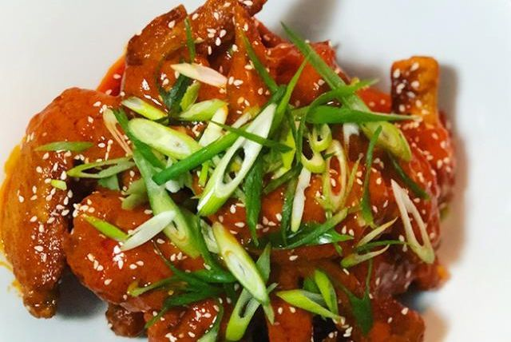

|
Recipe Name
|
Spicy Level
|
Ingredients
|
Cooking Steps
|
|
Spicy Pumpkin Soup
|
🌶 🌶 🌶
|
- 1 tbs vegetable oil
- 1 onion chopped
- 1 garlic clove crushed
- 1/2 tsp ground coriander
- 1/2 tsp ground cumin
- 1/2 tsp chilli powder
- 1kg pumpkin chopped
- 1L chicken stock (liquid)
- 90ml thickened cream
- 1 pinch ground black pepper fresh *to taste
|
- Heat oil in saucepan and cook onion over medium heat for 3-4 minutes or until soft.
Add garlic, coriander, cumin and chilli and cook for 1 minute longer.
- Add pumpkin and stock to pan, bring to the boil, then reduce heat and simmer for 15-20 minutes or until pumpkin is tender.
Remove pan from heat and set aside to cool slightly.
- Place pumpkin and cooking liquid in batches in a food processor or blender, and process until smooth.
- Return soup to a clean saucepan, stir in cream, season to taste with black pepper and cook over a medium heat, without boiling, until heated.
|
|
Chilli Con Carne Nachos
|
🌶 🌶 🌶 🌶
|
- 1 tbsp Oil
- 500g Lean Minced Beef
- 1 small (150g) Onion, Chopped Finely
- 1 pkt MAGGI Chilli Con Carne Recipe Base
- 1 x 400g can Chopped Tomatoes
- 1 x 400g can Four Bean Mix, Rinsed And Drained
- 2 tbsp Tomato Paste
- 2 Tomatoes, Chopped Finely
- 1/2 Red Onion, Chopped Finely
- 1/4 cup Chopped Coriander Leaves
- 175g pkt Corn Chips
- 1 cup (120g) Grated Tasty Cheese
- 1/3 cup Light Sour Cream
|
- Preheat oven to 200°C/ 180°C fan forced. Heat oil in a large frying pan, add beef and onions, cook for
5 minutes or until browned. Add MAGGI Chilli Con Carne Recipe Base, canned chopped tomatoes, four bean mix and tomato paste.Cook for 5 minutes or until cooked through and thickened, set aside.
- In a medium bowl, combine finely chopped tomatoes, red onion, and coriander, reserve.
- In a large baking dish, add corn chips, top with mince mixture, and sprinkle evenly with cheese, bake for 10 minutes or until cheese has melted,top with reserved tomato mixture and sour cream. Tip – serve with store brought guacamole, if desired.
|
|
Thai Chilli Jam Chicken
|
🌶 🌶 🌶 🌶 🌶
|
- 2 tbs peanut oil
- 1 brown onion finely chopped
- 500g chicken mince
- 1 red capsicum finely chopped
- 125g green beans trimmed cut into 3cm lengths
- 1 garlic clove crushed
- 1cm piece fresh ginger peeled finely grated
- 1 tbs Thai chilli jam
- 2 tbs lime juice
- 1 1/2 tbs light soy sauce
- 2 tsp fish sauce
- 1/3 cup Thai basil leaves
- 1 long red chilli thinly sliced
- 4 serves steamed jasmine rice *to serve
|
- Heat a wok over medium-high heat. Add oil. Swirl to coat. Add onion. Stir-fry for 1 minute or until just softened. Add mince. Stir-fry, breaking up lumps with a wooden spoon, for 4 to 5 minutes or until browned.
- Add capsicum, beans, garlic and ginger. Stir-fry for 2 minutes or until fragrant. Add chilli jam, lime juice, soy sauce and fish sauce. Stir-fry for 2 minutes or until vegetables are just tender.
- Top stir-fry with Thai basil and chilli. Serve with steamed rice.
|
|
Spicy Buffalo Wings

|
🌶 🌶 🌶 🌶 🌶
|
- 500 g chicken wings
- 1 cup Frank's hot sauce
- 2 tbs honey
- 1/2 tsp liquid smoke
- 1 cup plain flour
- 1 pinch salt
- 1 pinch pepper
- 1 sprinkle spring onions thinly sliced *to serve
- 1 sprinkle sesame seeds *to serve
|
- Chicken wings: Turn on deep-fryer or heat oil in a large saucepan.
- Coat wings in plain flour seasoned with salt and pepper.
- Once chicken wings are coated, place in deep-fryer. Don't add more than 4 wings at a time.
- Cook for 8-10 minutes until golden in colour. Drain onto a baking tray lined with paper towels.
- Sauce: Mix Frank's hot sauce, honey and liquid smoke into a small saucepan and heat over a medium heat. Once chicken is cooked and sauce has thickened, toss both chicken wings and sauce into a large bowl. Make sure to cover the wings entirely in sauce.
- To serve: Serve hot and sprinkle with spring onions and sesame seeds. These are best served with a cold blue cheese dipping sauce.
|
Pumpkin and Lentil Red Curry

|
🌶 🌶
|
- 1 red onion diced
- 700g pumpkin peeled and diced
- 4 tbs homemade curry paste
- 400ml coconut milk
- 4 cups vegetable stock
- 200g red lentils
- 2 tbs fish sauce
- broccoli rice to serve
|
- Fry the onion and pumpkin in olive oil on a medium heat. Cook until softened, stir in curry paste and cook until fragrant (about a minute).
- Add the coconut milk, vegetable stock and lentils. Bring to the boil and simmer, for about 20 minutes until the lentils are soft and tender. Add fish sauce and cook for a further three minutes or so. Serve with broccoli rice.
|
|
Chilli Coconut Prawns
|
🌶 🌶 🌶 🌶 🌶
|
- 1 kg raw prawns deveined peeled
- 2 tbs sweet chilli sauce
- 3 tbs soy sauce
- 2 tbs lime juice
- 1 garlic clove large
- 1 tsp ginger finely chopped
- 1 tbs vegetable oil
- 1 bunch spring onions sliced trimmed
- 200 ml coconut milk
- 1/3 cup water
- 1 cup desiccated coconut
- 20 snow peas
- 1 lime juiced
- 2 tsp sambal oelek
- 1 pinch salt to taste
|
- In a large bowl, mix together Thai sweet chilli sauce, lime juice, soy sauce, garlic and ginger.
- Marinate the prawns in the mixture for at least 20 minutes.
- Stir fry the shallots quickly for one minute.
- Add the prawns and marinade mixture, and cook until prawns change colour.
- Add the coconut milk, water and coconut, and mix through.
- Stir in the snowpeas.
- Stir in the sambal oelek and lime juice to balance the sweetness.
- Serve hot with steamed rice.
|
|
Thai Spicy Minced Beef
|
🌶 🌶 🌶 🌶
|
- 200g lean beef mince
- 2 tbs lemon juice
- 1 red onion finely chopped small
- 4 tbs fresh mint torn
- 2 tbs fresh coriander finely chopped
- 1 tbs lemongrass stalk thinly sliced
- 1/2 tsp fresh red chilli finely chopped
- 1 tbs fish sauce
- 2 tbs rice ground
|
- In a heavy-based pan or wok over high heat, dry-fry beef until just cooked.
- Remove and combine the remaining ingredients.
- Serve Immediately
|
|
Spicy Chicken Rolls
|
🌶 🌶 🌶 🌶 🌶
|
- 2 sheets butter puff pastry thawed
- 500g lean chicken mince
- 35g taco seasoning
- 1/2 cup tasty cheese shredded
- 1/4 cup cold water
- 1 tbs parsley finely chopped
- 1 egg *to glaze
- 1 tbs milk *to glaze
- 1 pinch paprika
|
- Preheat oven to 220C.
- Combine the mince, seasoning, cheese, water and parsley in a large bowl and mix well.
- Cut pastry sheets in half. Place a quarter of the mince mixture into a sausage shape along one edge of each pastry strip.
- Brush the other edge of the pastry strip with the egg wash. Roll up with the seam underneath.
- Cut each log into eight rolls, about 3cm long, without cutting all the way through.
- Place onto a lined baking tray and brush with egg wash. Sprinkle with paprika.
- Bake for 15 minutes, cut the rolls all the way through and cook for a further 5 minutes until golden brown.
|
|
Spicy Chorizo Penne
|
🌶 🌶 🌶 🌶
|
- 2 chorizo sausage cut diagonally
- 5 anchovy fillet chopped
- 2 parts garlic clove crushed
- 800 g canned chopped tomato
- 1/4 cup red wine
- 1 salt and pepper
- 375 g penne
- 1 cheese
|
- Heat a non-stick pan over medium heat, add the chorizo sausage and cook for one minute or until golden.
- Transfer to a plate.
- Add the anchovies and garlic to the pan and cook for 30 seconds.
- Add the tomatoes, wine and cooked chorizio then season with sea salt and pepper.
- Bring to boil, reduce heat to medium and simmer for 25-30 minutes or until sauce thickens.
- Cook the pasta in a large saucepan of boiling water. Drain well and divide pasta into dishes.
- Spoon sauce over pasta and top with shaved parmesan cheese.
|
|
Sweet Chilli Sausages
|
🌶
|
- 4 sausages
- 4 tomatoes sliced
- 500 g rindless bacon
- 1 onion thinly sliced
- 1/2 cup sweet chilli sauce
|
- Boil sausages until cooked and then peel off remaining skin
- Cut sausages into 3 pieces and place in frying pan.
- Add onion and cook until soft.
- Add bacon and cook for 5 minutes.
- Add sweet chilli sauce and tomatoes and cook for 5-10 minutes or until tomatoes have dissolved into a sauce.
|